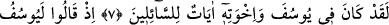
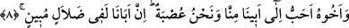

YÛSUF’A KURULAN TUZAK
7. Andolsun Yûsuf ve kardeşlerinde soranlar için ibretler vardır.
8. (Kardeşleri) demişlerdi ki: “Yûsuf ve kardeşi babamıza bizden daha sevgilidir.
Oysa biz bir cemaatiz. Babamız açık bir yanlışlık içindedir.”
9. “Yûsuf’u öldürün ya da onu bir yere atın da babanızın teveccühü yalnız size
kalsın. Ondan sonra da sâlih bir topluluk olursunuz.”
10. İçlerinden bir sözcü: “Yûsuf’u öldürmeyin, onu kuyunun dibine atın,
kervanlardan biri görüp onu alsın; eğer yapacaksanız (böyle yapın).” dedi.
“Andolsun Yûsuf ve kardeşlerinde” yâni Allah’a yemin olsun ki Yûsuf kıssasında ve
onun on bir kardeşinin hikâyesinde “soranlar” kıssalarını soran ve öğrenen herkes
“için ibretler” yani Allah’ın kahredici gücüne ve yüce hikmetine delâlet eden çok
büyük alâmetler “vardır.” Çünkü Yâkub’un büyük oğulları en küçük oğlu olan Yûsuf’u
zelil kılmaya ittifakla karar verdikten ve yaptıklarını yaptıktan sonra Allah Teâlâ
Yûsuf’u peygamberliğe ve hükümdarlığa seçmiş, onları da ona boyun eğen ve hükmünü
yerine getiren kimseler kılmıştır. Yûsuf’a duydukları kıskançlığın vebâli kendi başlarına
dönmüştür. İşte bu, Allah’ın kahredici gücüne ve yüce hikmetine delâlet eden en büyük
ibretlerdendir.
Tefsîr-i Fârisî’de şöyle denir: “Rivâyet edilir ki Yûsuf mezkûr rüyâyı babasına
anlatınca babası rüyâyı gizlemesini tavsiye etti. Allah’ın kendisini seçeceğini ve
nimetini tamamlayacağını ona müjdeledi. Kardeşlerinin hanımlarından bazısı bu
müjdeyi işitti. Akşam kocaları evlerine gelince durumu onlara anlattılar. Yûsuf’un
kardeşlerinin hased damarları kabardı. Ciddi bir plan kurmakla meşgul oldular.”
Yahuda, Rubil ve Şimon Yûsuf hakkında şöyle dediler: “Anne babası da kendisine
secde etmeden, sadece kardeşlerinin kendisine secde etmesine razı olmuyor! Onu
aradan kaldırmak için bir plân yapın!” Nitekim onların sözleri şöyle hikâye edilmiştir: